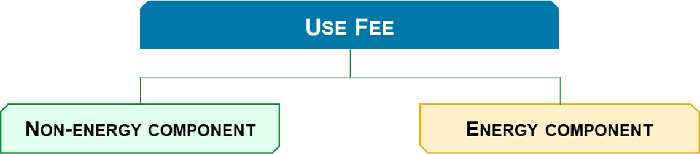

The TowerCo Business Model 💼
A Primer — Introduction and Key Concepts
Disclaimer:
This article is for educational purposes only. Information presented has been compiled from multiple pieces of literature including Towerxchange.com and involves some data crunching conducted by the author. Since most TowerCos are under private ownership globally, data is available to the extent it is provided by Governments and/or TowerCos. Certain approximations have been made.
Please also review the General Disclaimer covering all content in and/or directed from Quantificate.ca.
Before we go ahead and jump into the TowerCo Business Model, let's take a step back, look at the model structure and understand a few key terms that will help us navigate. The TowerCo Business Model is built on 5 primary drivers that govern different aspects of the acquisition and operation processes. Whereas some of the drivers are independent, there are a few which overlap with each other.

The nature of the relationship and overlap between these drivers is illustrated in the following diagram:

Driver 1: Towers and Tenants 🗼
Towers and Tenants refer to the quantum of towers that constitute a portfolio, and the respective Wireless Network Operators (or ComCos) that house their equipment as tenants on the tower. The calculation of the number of tenants on a tower is governed by the Services Contract and may refer to a particular ComCo occupying space for 2 tenants on the tower.
💡 Example: How Tenancy is Counted
Suppose that a Service Contract with a ComCo specifies that a standard space on the tower with X windloading and Y vertical space will cost Z dollars per month. If a ComCo aims to install equipment that exceeds these spatial parameters, the ComCo may have to purchase an additional unit of space. In this case, the TowerCo will realize 2 tenants for that tower.
A tower portfolio normally ranges anywhere from a few (i.e. 20 or 30 towers) to thousands of towers. Monitoring and tracking individual Towers and their respective Tenants for the business plan gets tedious. Therefore, to circumvent this obstacle, TowerCos adopt a holistic approach and calculate the "average tenancy ratio" on the portfolio to drive elements in the business plan.

Driver 2: Contracts 📄
Contracts determine the nature of relationship between a ComCo and a TowerCo. They generally fall under either of the 3 following categories:

Acquisition Contracts 🏷️
The Asset Purchase Agreement (APA) or the Share Purchase Agreement (SPA) covers the transfer of ownership of the assets (or the company) from the seller (ComCo) to the buyer (TowerCo). Every contract differs, however, common elements include:
- Price for the assets or shares
- Number and types/classes of assets/shares covered
- Structure of the transfer
- Taxes and levies
- Party warranties, guarantees and responsibilities
- Pricing mechanism (i.e. lock box or closing accounts)
- Conditions precedent and subsequent
- Flow of funds mechanism (i.e. escrow)
- Payment transfer thresholds (single/multiple payments and schedules)
- Clauses on refunds and withdrawal from the contract
Project Contracts 🏗️
Somewhat similar to Acquisition Contracts, Project Contracts deal with Greenfield (or new build) Projects where a TowerCo constructs new towers for ComCos to expand their coverage and capacity. In most cases Project Contracts are paired with long term Services Contracts since the TowerCo is expected to redeem capital invested by having the ComCo as its long term tenant. Common elements include:
- Tower specifications, type and location
- Construction schedule
- Ownership
- Taxes and levies
- Party warranties, guarantees and responsibilities
- Conditions precedent and subsequent
- Clauses on withdrawal from the contract
Services Contracts 🤝
Often referred to as "leaseback" in Sale and Leaseback, Services Contracts are (in essence) long term tenancy agreements between the TowerCo (landlord) and the ComCo (tenant). These agreements span (on average) for more than 7 years and are generally the most comprehensive of the lot. There are 2 major types:
- Master Tower Services Agreement (MTSA): Where the TowerCo is the owner of the asset and the ComCo is the tenant. The TowerCo receives a rental or "Use Fee" from the ComCo.
- Managed Services Agreement (MSA): Where the ComCo owns the tower but outsources operations to the TowerCo to manage. In exchange, the ComCo pays a management fee.
📌 Key Distinction: Whereas both Acquisition and Project Contracts need a Services Contract to make a transaction viable, a TowerCo and ComCo can enter into a Services Agreement independently — without a Project or Acquisition Agreement.
Common elements covered in Services Contracts include: rental Use Fee (escalation and schedules), standard and additional scope of services, service levels and penalties, right of first offer/refusal, permitted and prohibited withdrawal items, conditions precedent and subsequent, party warranties, additional tenancies, privacy and confidentiality clauses.
Driver 3: Revenue and Operations 💰
Revenue and operations drive the service and profitability element of the TowerCo model. TowerCo customers are primarily ComCos such as telecom service providers. This means that the customer base of TowerCos is limited, which can tilt the collective bargaining position in favor of ComCos. However, TowerCo services have an inelastic demand.
ComCos enter into long term service agreements with TowerCos. This means that TowerCo revenues are fixed under long term contracts. The revenue comes from the Use Fee — the rental fee paid by the ComCo. This fee is normally bifurcated into 2 components (energy and non-energy) and is subject to periodic escalations to account for rises in costs over the term of the contract.

To provide service to customers, a TowerCo has to incur expenditure to sustain its operations. The expenditures are broken down into 8 main brackets:
- Ground Lease or Tower Portfolio rent expense
- Energy expenditure (grid and alternative energy) for operating the tower portfolio
- Tower portfolio routine operations and maintenance expenditure
- Tower portfolio insurance expenditure
- Regulatory permits, licenses and governmental fees
- Tower portfolio security cost
- Other direct expenditures
- General and administration expenditure
These cover the running expenditures but exclude investments in equipment, infrastructure, property and other assets that improve company operations — those are capital items covered under Capital Expenditures.
Driver 4: Capital Expenditure 📊
Capital expenditure (or capex) deals with expenditure on assets that provide utility to the organization for a period spanning greater than 1 year. TowerCo capex is normally clubbed into the following line items:

- Acquisition: Capital invested into purchasing a portfolio or adding towers. Usually the most infrequent and largest expense head.
- Build-to-Suit: Capital invested in constructing new towers — most common in greenfield projects.
- Refurbishment: One-time investment into making upgrades or bringing a newly acquired portfolio to operating condition.
- Strengthening: Structural and technical upgrades to existing towers to support new tenants — steel frames, power equipment etc. Occurs when securing new tenants.
- Maintenance/Recurring: The most frequent, stable and largest routine capex item. Covers big ticket replacements like backup batteries and generator overhauls.
- Office/Fleet and Others: Office equipment, automobile fleet and residual items.
Driver 5: Acquisition/Expansion Specifics 🔑
When considering organic (expansion through construction) or inorganic (expansion through acquisition) growth, there are certain leakages (other than the purchase or construction price) factored into the TowerCo Business Model. These leakages can be loosely described as closing costs.

Transaction Costs
Generally referred to as transaction specific, these costs are incurred during different phases of the deal process:
- Due Diligence/Feasibility Studies: Expected costs budgeted for commercial, technical and financial due diligence.
- Debt Arrangement Fees: Expected costs for arranging lender financing facilities. Financing received is normally netted for these fees.
- Advisory Services (Tax, Legal, M&A etc): Fees charged by specialist firms for deal advisory.
Working Capital Reimbursements
Since the TowerCo business model relies heavily on real estate, certain prepayments and advances are needed to close the deal:
- Portfolio Ground Lease reimbursement to the seller or Ground Lease Prepayment to the landlord
- Bank Guarantees required by the landlord of the tower asset
- Rental Deposits required by the landlord of the tower asset
Initial Working Capital Injection
Depending on customer payment terms, a TowerCo will need an initial injection of cash to commence operations and provide services to its tenants. This injection is mostly done through equity and the amount required can be reverse engineered by modelling out multiple scenarios in the business plan.
What's Next? 🚀
This sums up the structure and a brief introduction of the TowerCo business plan and its drivers. Now that we are equipped with this information, the next few articles will dive deeper into the models, assumptions and mechanics of each business plan driver. 📈
Explore the Full Series 📚
This is Part 6 (the finale) of the Towersharing Deep Dive series. Thanks for reading!
← Part 5: Operational Models Explore More Articles